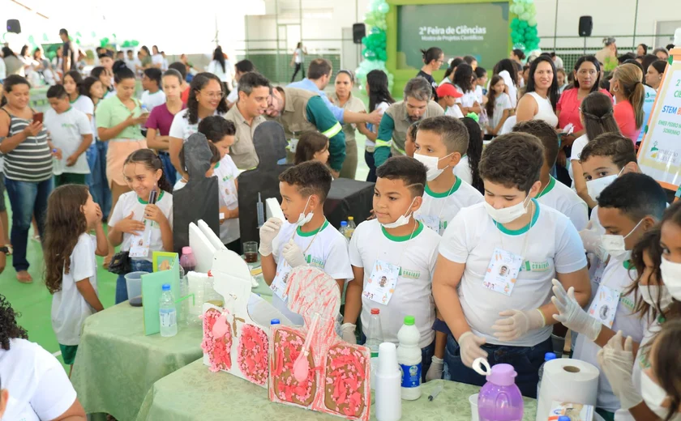

Educação📚
Craíbas celebra a inovação educacional com a maior Feira de Ciências da sua história
Em um evento que marca um novo capítulo na educação de Craíbas, o município testemunhou a realização da maior Feira de Ciências de sua história, envolvendo cinco escolas e impactando diretamente 250 alunos. A feira, uma iniciativa apoiada pela Mineração Vale Verde (MVV), a ONG Educando e a Secretaria de Educação de Craíbas, é um reflexo do compromisso com a educação inovadora e a preparação dos jovens para os desafios futuros.
O Programa STEM, que representa as áreas de Ciência, Tecnologia, Engenharia e Matemática, foi o protagonista deste evento, proporcionando uma imersão tecnológica e práticas metodológicas robustas. As escolas municipais de educação básica Alonso de Abreu Pereira Filho, Dr. José Pereira Mendes, Francisco Paulino da Silva, Manoel Vieira da Silva e Pedro Nunes Sobrinho foram as estrelas da feira, apresentando projetos que vão desde robótica até reciclagem e estudos ambientais.
A feira não foi apenas uma vitrine para os projetos científicos dos alunos, mas também uma celebração da curiosidade e do aprendizado prático. Com a doação de 25 computadores equipados com ferramentas pedagógicas avançadas, a MVV e seus parceiros demonstraram seu compromisso com o desenvolvimento educacional do município. O gerente geral da MVV, Breno Martins, destacou a importância de aprender de forma lúdica e interativa, uma abordagem que o Programa STEM encoraja fortemente.
Os projetos apresentados abordaram uma variedade de temas, incluindo a versatilidade do Juá, uma árvore local, em aplicações como xampu e pasta de dente, mostrando a criatividade e o engajamento dos alunos com o meio ambiente local. A feira também destacou a importância da preservação ambiental, alimentação saudável e os benefícios das plantas para a saúde.
Este evento é um testemunho do potencial transformador da educação. Ao integrar a tecnologia e métodos interativos no processo de aprendizagem, Craíbas está pavimentando o caminho para um futuro brilhante para seus jovens estudantes. Com a educação como alicerce, o município está se posicionando como um exemplo de inovação e dedicação ao progresso educacional.
Política🗳
A Reforma do Judiciário no México: Um Passo em Direção à Democracia Judicial?🤔

A reforma do Judiciário mexicano, uma iniciativa promovida pelo governo de Manuel Andrés Lopez Obrador, avançou significativamente após a aprovação pela Comissão para Assuntos Constitucionais. Esta reforma propõe mudanças estruturais no sistema judicial do país, incluindo a eleição direta para juízes, magistrados e ministros da Suprema Corte.
O projeto de reforma, que reduz o número de integrantes do Supremo de 11 para 9 e o prazo do mandato de 15 para 12 anos, também prevê a eliminação das duas salas da Corte, centralizando as deliberações no plenário principal com sessões públicas. Além disso, a partir de 2025, todas as posições judiciais serão preenchidas por meio de eleições diretas, com candidatos definidos pelos Três Poderes do país e uma paridade entre homens e mulheres.
A reforma tem como objetivo erradicar problemas crônicos como corrupção, impunidade, nepotismo e tráfico de influência, que há anos obstruem a imparcialidade da Justiça no México. Segundo o partido Morena, a reforma visa desmantelar a "aristocracia judicial" e fortalecer a democracia no país.
Contudo, a reforma enfrenta forte oposição tanto internamente quanto de atores externos. A oposição acusa o governo de tentar minar a independência do Judiciário e caminhar para uma ditadura, enquanto agências de risco como a Fitch e a Morgan Stanley alertam para a possibilidade de rebaixamento da nota do México para investidores se a reforma prosseguir. Adicionalmente, a proposta gerou tensões diplomáticas com os Estados Unidos, com o embaixador americano no México expressando preocupações sobre o impacto das eleições judiciais na relação comercial entre os dois países.
A expectativa é que o novo Parlamento, que toma posse em setembro com maioria governista, aprove a reforma. A primeira eleição extraordinária está prevista para junho de 2025, marcando um momento histórico para o sistema judicial mexicano e potencialmente para a governança global.
Este desenvolvimento representa um ponto de inflexão para o México, que busca fortalecer sua democracia através de uma maior transparência e responsabilidade no Judiciário. O sucesso ou fracasso desta reforma terá implicações profundas não apenas para o México, mas também para a percepção internacional de sua estabilidade política e jurídica.
Ciência🧪
O estudante piauiense Manoel José Nunes, de apenas 17 anos, alcançou um feito notável ao ser laureado com o Stockholm Junior Water Prize, frequentemente referido como o Nobel da Ciência Jovem, por seu inovador projeto de monitoramento da qualidade da água. Este prêmio é uma distinção de prestígio internacional que reconhece contribuições significativas de jovens pesquisadores nas áreas relacionadas à ciência da água.
O projeto de Nunes, um rover aquático, destaca-se por sua autonomia e portabilidade, além de ser uma solução de baixo custo para análise de parâmetros vitais como pH, temperatura, turbidez e oxigenação da água. A iniciativa surgiu após Nunes tomar conhecimento da situação crítica enfrentada por comunidades ribeirinhas no norte do Brasil, onde a qualidade da água é frequentemente comprometida.
A conquista de Nunes não é apenas um marco pessoal, mas também um triunfo para o Brasil, pois ele representou o país na competição internacional. O jovem cientista conseguiu mobilizar um amplo apoio através de suas redes sociais, o que foi crucial para sua vitória na categoria de escolha popular da premiação.
A relevância do trabalho de Nunes reside na sua aplicabilidade prática, oferecendo dados importantes que podem auxiliar órgãos públicos na elaboração de políticas eficazes para o controle e manutenção da qualidade da água. Este é um exemplo inspirador de como a juventude pode contribuir significativamente para questões ambientais críticas, utilizando a ciência e a tecnologia como ferramentas de mudança positiva.
A premiação ocorreu na Suécia, e o reconhecimento de Nunes reforça a importância de investir no potencial científico dos jovens e na pesquisa aplicada ao meio ambiente. O projeto de Nunes é um lembrete poderoso de que ideias inovadoras e ações concretas podem emergir de qualquer parte do mundo, inclusive de regiões muitas vezes sub-representadas na ciência global.